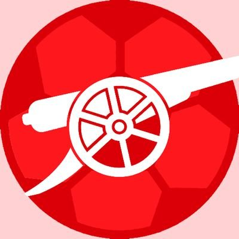

Gunners
The sister website of
r/Gunners
,
The official subreddit of Arsenal Football Club
Home
Fixtures
Squad
Our Friends
Fixtures 20/21
September
Fulham vs Arsenal
Sat 12th September 2020
Arsenal vs West Ham
Sat 19th September 2020
Leicester City vs Arsenal
Tue 22nd September 2020
Liverpool vs Arsenal
Mon 28th September 2020
October
Arsenal vs Sheffield United
Sat 3rd October 2020
Manchester City vs Arsenal
Sat 17th October 2020
Arsenal vs Leicester City
Sat 24th October 2020
Manchester United vs Arsenal
Sat 31st October 2020
November
Arsenal vs Aston Villa
Sat 7th November 2020
Leeds United vs Arsenal
Sat 21st November 2020
Arsenal vs Wolves
Sat 28th November 2020
December
Tottenham vs Arsenal
Sat 5th December 2020
Arsenal vs Burnley
Sun 13th December 2020
Leicester City vs Arsenal
Tue 15th December 2020
Everton vs Arsenal
Sat 19th December 2020
Arsenal vs Chelsea
Sat 26th December 2020
Brighton vs Arsenal
Tue 28th December 2020
January
West Brom vs Arsenal
Sat 2nd January 2021
Arsenal vs Crystal Palace
Tue 12th January 2021
Arsenal vs Newcastle
Sat 16th January 2021
Southampton vs Arsenal
Wed 27th January 2021
Arsenal vs Manchester United
Sat 30th January 2021
February
Wolves vs Arsenal
Tue 2nd February 2021
Aston Villa vs Arsenal
Sat 6th February 2021
Arsenal vs Leeds United
Sat 13th February 2021
Arsenal vs Manchester City
Sat 20th February 2021
Leicester City vs Arsenal
Sat 27th February 2021
March
Burnley vs Arsenal
Sat 3rd March 2021
Arsenal vs Tottenham
Sat 13th March 2021
West Ham vs Arsenal
Sat 20th March 2021
April
Arsenal vs Liverpool
Sat 3rd April 2021
Sheffield United vs Arsenal
Sat 10th April 2021
Arsenal vs Fulham
Sat 17th April 2021
Arsenal vs Everton
Sat 24th April 2021
May
Newcastle vs Arsenal
Sat 1st May 2021
Arsenal vs West Brom
Sat 8th May 2021
Chelsea vs Arsenal
Wed 12th May 2021
Crystal Palace vs Arsenal
Sat 15th May 2021
Arsenal vs Brighton
Sun 23rd May 2021